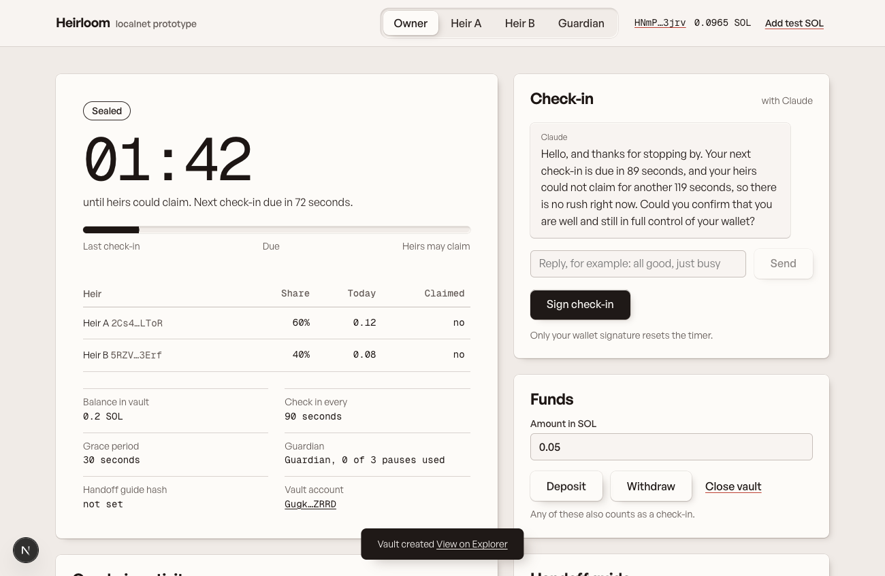
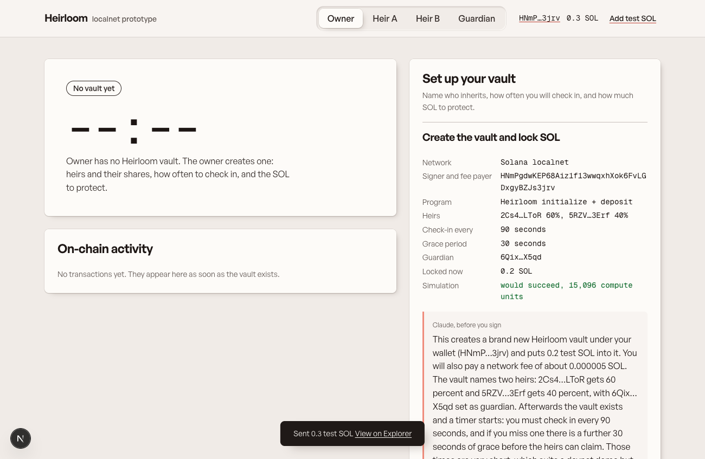

A dead-man’s switch for your crypto. Check in with Claude. If you go silent, your heirs claim on Solana.
MLH Solana Hackathon, November 2026 · Seunghyeon Baek · devnet prototype
Full control while alive. A fair, automatic handover when they stop showing up. Plain words for heirs who are not crypto people.
Lock SOL in a program-owned vault. Name up to five heirs and their shares. Choose how often you check in and how long the grace period is.
Miss your check-ins and, after the grace period, each heir can claim their share once. A guardian can delay the unlock but never touch the funds.

Four demo wallets live in the browser, so anyone can play every role without installing a wallet.
4| Program | Anchor 1.2.1, Rust: 9 instructions, PDA holds lamports |
| Client | Codama-generated @solana/kit 8 client from the IDL |
| App | Next.js 16: simulate, then explain, then sign, then confirm |
| AI | Server route handlers calling Claude (claude-sonnet-5-5); the server reads vault facts from chain |
| Tests | 18 LiteSVM tests + Surfpool end-to-end with time travel |
The owner’s vault PDA is derived from the signer’s key with has_one checks. The relay can only send heartbeats. The guardian can only pause. Heirs can only claim.
The first claim freezes the pot. A bitmap blocks double claims and is set before lamports move. The last heir sweeps the dust. The vault never goes below its rent minimum.
Each guardian pause lasts at most 30 days, with at most 3 pauses per check-in period. Owner actions revive the vault only before the first claim.
Tested: exact unlock boundary, double claim, wrong signers, a fake vault owned by another program, stray lamports, five heirs in any order.
6
Only a wallet signature changes state. The API key stays on the server.
7Seunghyeon Baek
Solo builder from South Korea, building in public.
github.com/seunghyeon1004/heirloom